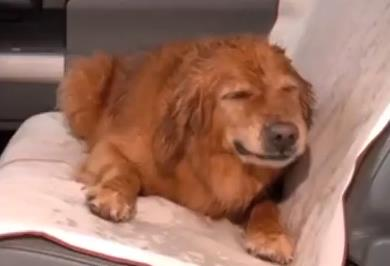

Cassandra Hurlbut
Cassandra Hurlbut grew up riding horses in her home state of Hawaii. She learned the true value of riding by having to work off her lessons from a young age by grooming, cleaning stalls, feeding, and eventually working for a trainer. She competed competitively in dressage with her horse Hudson, taking a few national titles in the lower levels. After high school she moved to California to pursue her other love of film and writing. After graduating with a BFA in 2011 she started work in the film industry. After balancing owning a horse and working on a busy television show for 3 years, Cassandra found her true passion at Special Spirit, Inc. She started out volunteering and loved it so much that by April of 2015 she had acquired her PATH Intl Registered Instructor status and left the TV world behind to pursue teaching therapeutic riding. She loves spreading her love and knowledge of horses with children and adults of all abilities with a kind and patient teaching style. She still enjoys riding and training her same horse from high school, Hudson, in the discipline of dressage and going for long, relaxing trail rides.